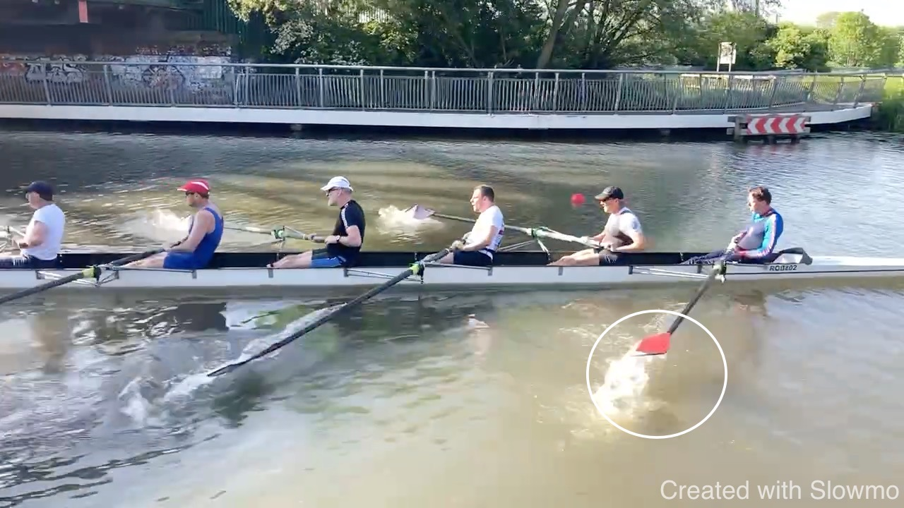
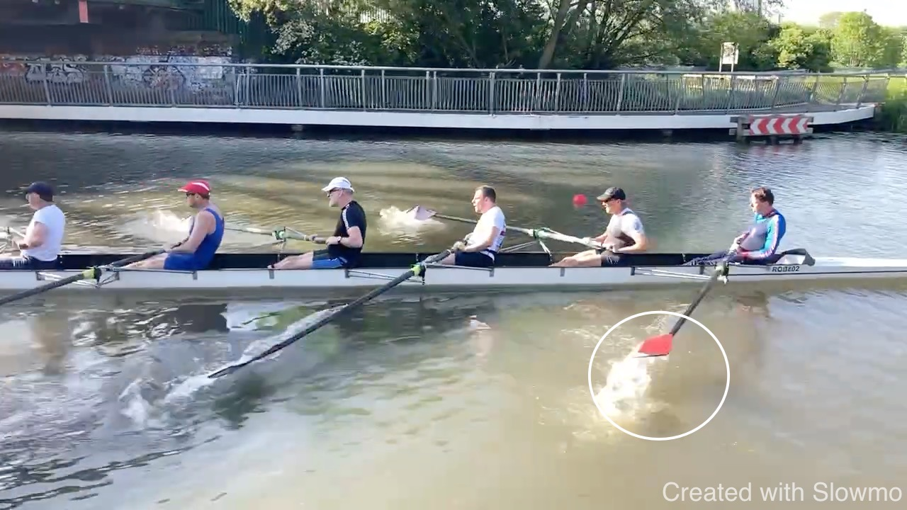For a simple finish, the blade has to clear the water before feathering. Scooping up water indicates that the blade is feathered in the water.
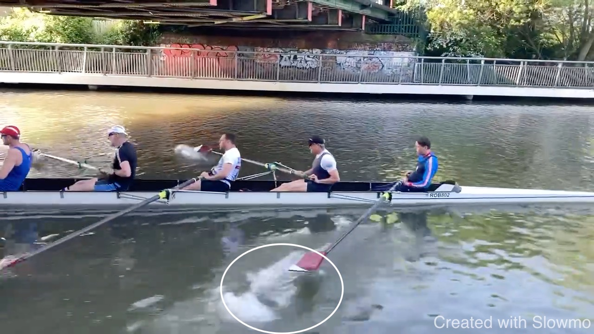
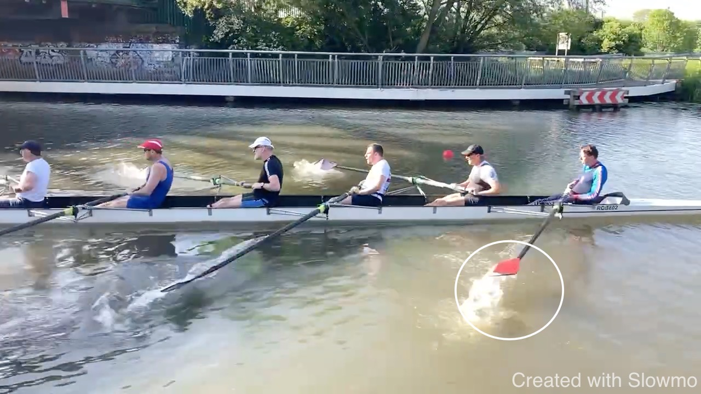
The power in the second half of the drive comes off early. We are looking for a long direct connection. This connection breaks once the arms bend because we can’t repeatedly hold our body weight. Here this happens before the body is vertical. The feathering motion of the outside hand could trigger this as this is a complicated movement that I would look to simplify. To maintain contact with the boat, look at the speed of your legs. Observe that a lot of leg drive is left when the arms start to break.


Simplify the early drive by “keepign the handle out”: you are brining the handle to you by working on it. Try to keep it out, just working with the legs, then opening the body against the feet. This gives you a longer body swing for the seconds half of the drive.
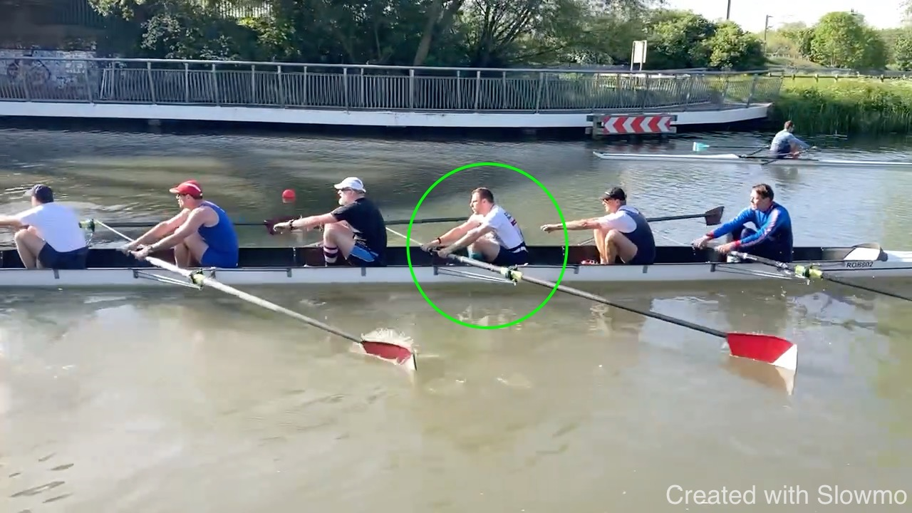


We see bending arms towards the finish. I believe this happens because the early connection is not solid and hence you move through the early stroke fast, reaching the finish early. Now that forces you to use your arms.
 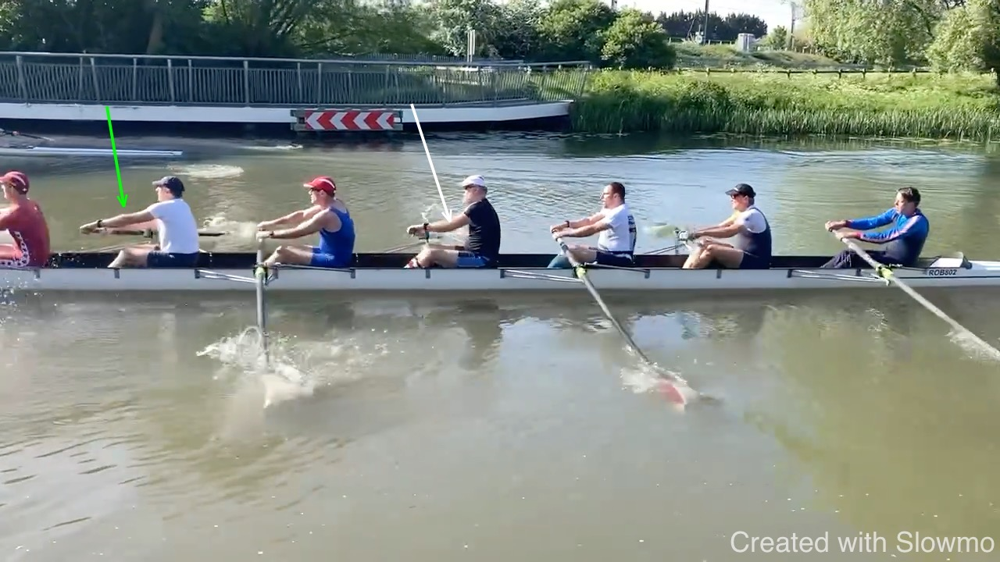
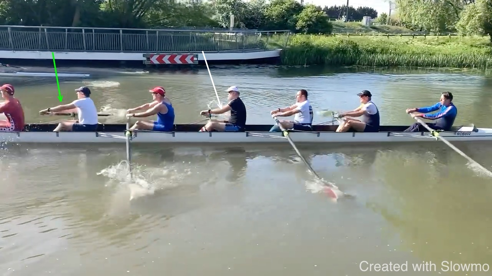

We can’t give you a bigger spoon so you need more patience for the connection as you are ripping trough the water. This is something the entire boat needs to improve. A better connection will improve the timing in the drive.
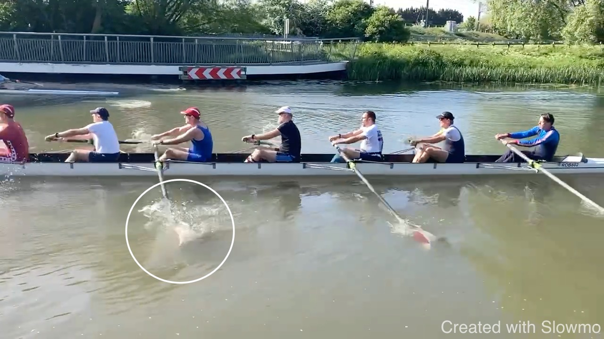
I believe we should time the catch with the shins vertical to be in a strong position and to pick up the boat without moving all weight into the front. Generally fast, solid connection at the front - which gives you a long strong. “Keeping the handle out” applies here as well - the work moves to the shoulders early, leading to a body opening.


 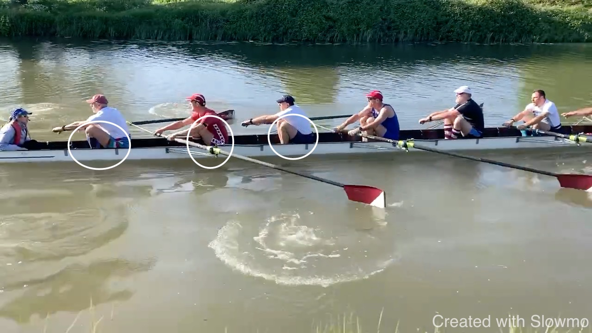
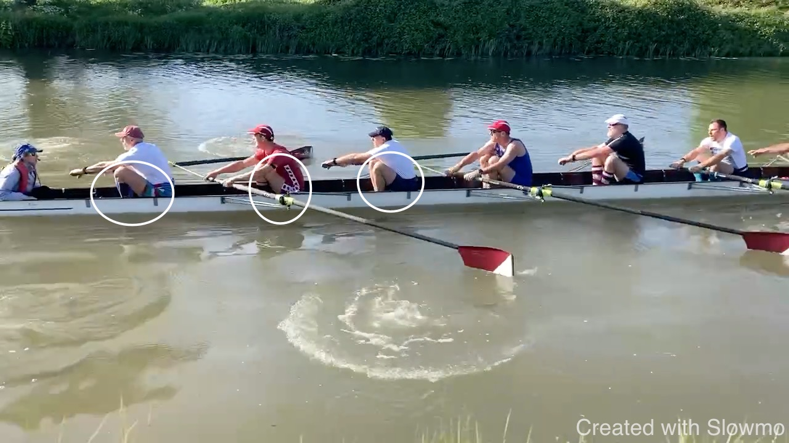
A lot of white water around the blades suggets an early power application; this drives back the boat and shortens the effective stroke length. I believe this stroke characteristic should change.


Over-compression leads to late preparation: if we aim to catch the boat in a strong stable postion when shins are vertical, blades need to be square a tick arlier.
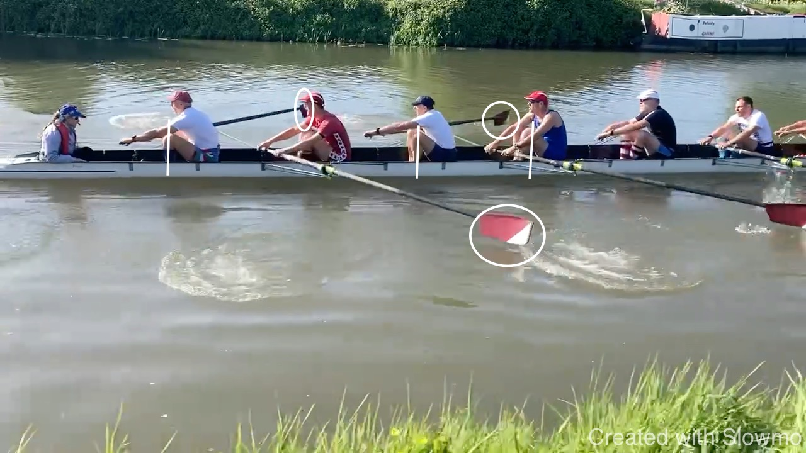
In the frames below the arrow is from the same point in the background and hence lets us observe how far the boat has moved.

 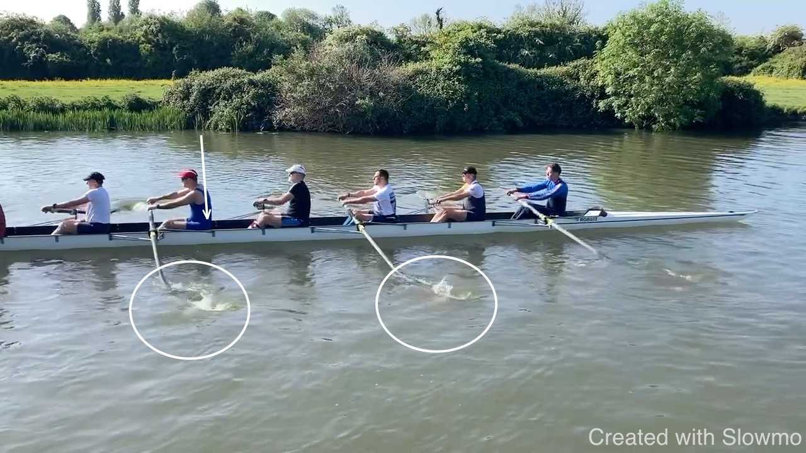
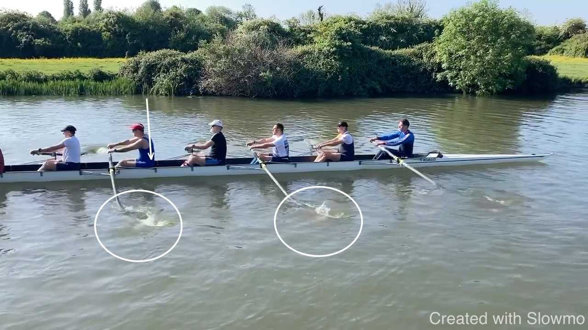
The first stroke moves the boat one seat - about 1.5m. But one stroke moves the boat about 3m - so a good part of the stroke the boat didn’t move at all. As can be seen from the blades ripping through the water. This needs more patience.
Below is a great start.
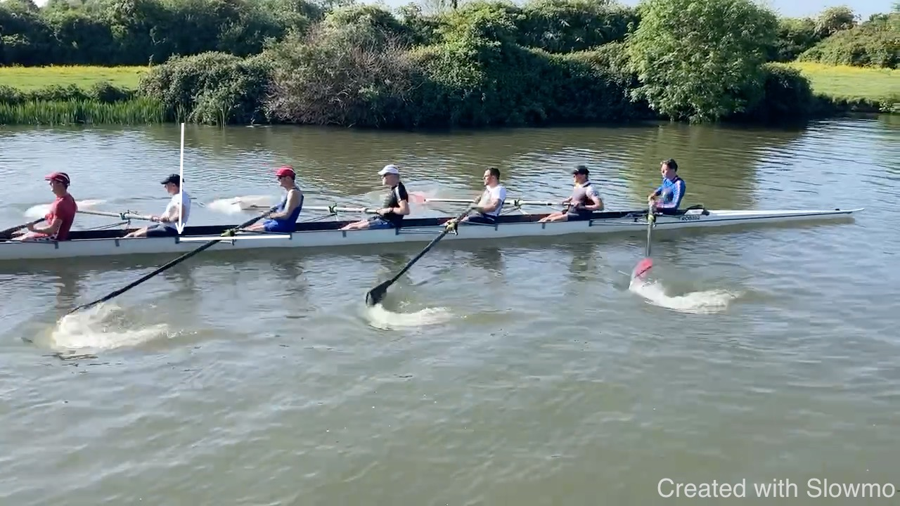 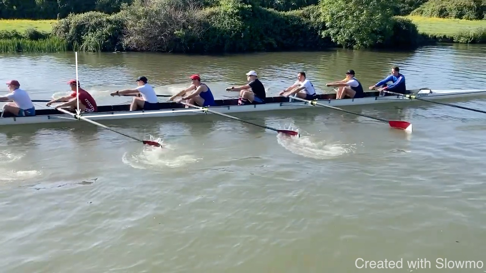 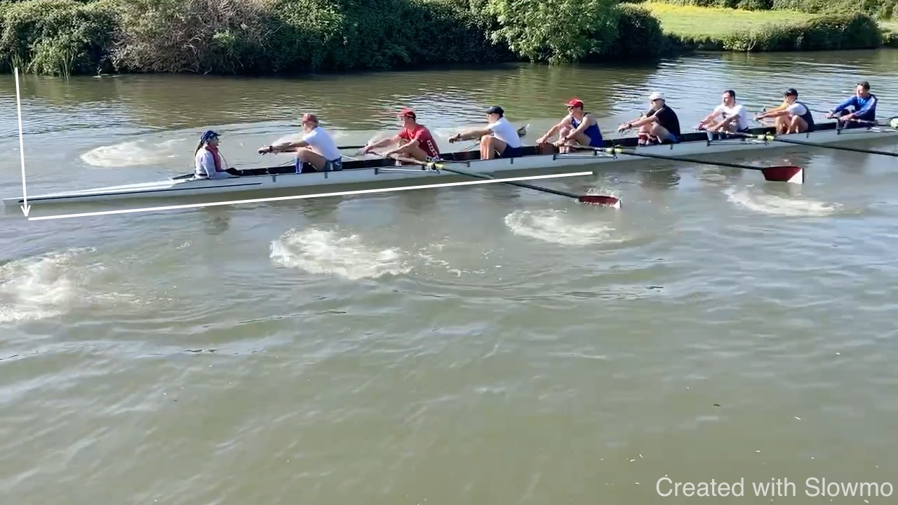
Believe the acceleration through the stroke can improve: connecting with more patience, not as hard, and accelerating the boat for longer.